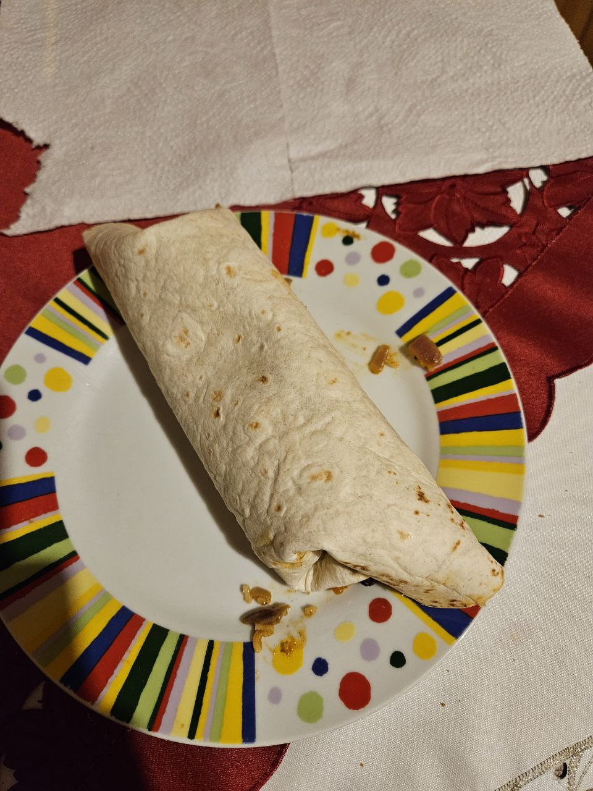

Gulby burrito

Back to all recipes
A really simple but filling meal, made up of ground beef, corn, mexican vegetable mix, onions, tomatoes, and spices.
Cheap, huge in amount, and probably high in protein, too.
Ingredients
1kg, ground meat
1-2 tomato
1-2 red onions
1/2 bag of frozen mexican vegetables
extra corn to taste
salt, pepper, burrito spices to taste